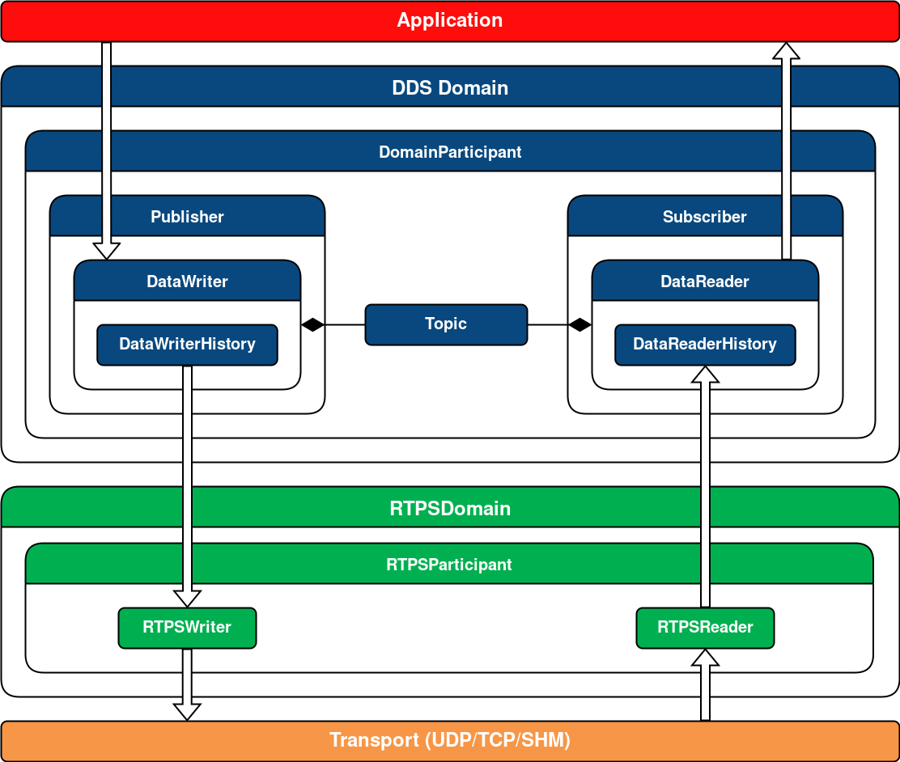

Fast-DDS
架构图
应用层：使用Fast-DDS API在分布式系统中实现通信的用户应用程序。
快速DDS层：DDS通信中间件的稳健实现。它允许部署一个或多个DDS域，其中同一域内的参与者通过在域主题下发布/订阅来交换消息。
RTPS层：实现实时发布-订阅（RTPS）协议以实现与DDS应用程序的互操作性。该层充当传输层的抽象层。
传输层。快速DDS可用于各种传输协议，例如UDP、TCP、SHM（共享内存传输协议）。
DDS层
域。标识 DDS 域的正整数。每个DomainParticipant 都会有一个分配的DDS 域，这样同一个域中的DomainParticipant 就可以进行通信，也可以隔离DDS 域之间的通信。该值必须由应用程序开发人员在创建 DomainParticipants 时提供。
域参与者。包含其他 DDS 实体（例如发布者、订阅者、主题和多主题）的对象。它是允许创建它包含的先前实体以及配置它们的行为的实体。
出版商。发布者使用 DataWriter 发布主题下的数据，后者从传输中读取数据。它是创建和配置它包含的 DataWriter 实体的实体，并且可能包含其中一个或多个。
数据写入器。它是负责发布消息的实体。用户在创建此实体时必须提供一个主题，该主题将是发布数据的主题。发布是通过将数据对象写入 DataWriterHistory 中的更改来完成的。
数据写入器历史记录。这是对数据对象的更改列表。当 DataWriter 继续在特定主题下发布数据时，它实际上会在此数据中创建更改。记录在历史记录中的正是这种变化。然后将这些更改发送到订阅该特定主题的 DataReader。
订阅者。订阅者使用 DataReader 订阅主题，后者从传输中读取数据。它是创建和配置它包含的 DataReader 实体的实体，并且可能包含一个或多个 DataReader 实体。
数据阅读器。它是订阅主题以接收发布的实体。创建此实体时，用户必须提供订阅主题。DataReader 接收消息作为其 HistoryDataReader 中的更改。
数据阅读器历史记录。它包含DataReader 由于订阅某个主题而接收到的数据对象的变化。
话题。将发布者的 DataWriter 与订阅者的 DataReader 绑定的实体。
RTPS层
RTPS域。它是 DDS 域对 RTPS 协议的扩展。
RTPS参与者。包含其他 RTPS 实体的实体。它允许配置和创建它包含的实体。
RTPSWriter。消息的来源。它读取写入 DataWriterHistory 中的更改并将它们传输到它之前匹配的所有 RTPSReader。
RTPS阅读器。消息的接收实体。它将 RTPSWriter 报告的更改写入 DataReaderHistory。
—